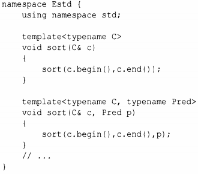

⇐12.7 Концепты (С++20) 12.9 Параллельные алгоритмы⇒
Для того чтобы не ожидать официального принятия диапазонов, можно определить собственные простые алгоритмы для диапазонов. Например, можно легко предоставить сокращение, чтобы писать просто sort (v) вместо sort (v. begin(), v. end()):
Я поместил контейнерные версии sort () (и других алгоритмов) в их собственное пространство имен Е s td ("extended s td" - расширенный s td), чтобы не мешать другим пользователям применять пространство имен s td, а также чтобы затем было проще заменить эту "затычку" для концепта Range использованием настоящего концепта.